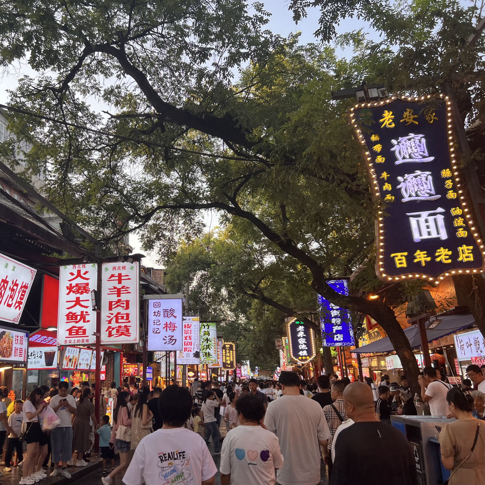

Travel Guide
China Map
Over the past three years, I have visited Beijing, Xi'an, Sichuan, Shanghai, Wuhan, Nanjing, Hong Kong, and Taipei in China. During this time, I've encountered many wonderful people and experiences and achieved many of my travel goals. Most of the time, I traveled with family and friends. My upcoming travel plan is to go to Gansu Province; I'm very interested in the local cuisine, natural scenery, and historical sites there, and I'm planning to visit this summer. I hope to explore most of China in the future!
Sichuan Hot Pot
Xi'an
Chengdu
Xi'an Map
I'm from Xi'an, Shaanxi, where my hometown is famous for its delicious food and ancient culture. The Terracotta Army, known for being the gigantic accompanying burial army of Emperor Qin Shi Huang, the first emperor of China, is located in Lintong District, Xi'an, Shaanxi Province. Xi'an is also referred to as the "Ancient Capital of Thirteen Dynasties," and its 3,000 years of historical sedimentation has resulted in a vast number of museums. Last summer, I embarked on my second journey to explore the museums of Shaanxi, but due to time constraints, I was unable to complete the tour. This summer vacation, I plan to continue exploring these museums!
| Tourist Attractions | Names | Photos |
|---|---|---|
| Historical Sites | Shaanxi History Museum | |
| Shaanxi Archaeology Museum | ||
| Terracotta Warriors & Huaqing Pool | ||
| Zhao Mausoleum & Qian Mausoleum & Mao Mausoleum | ||
| Tang Paradise & Giant Wild Goose Pagoda & Great Tang All Day Mall | ||
| Bell Tower & Drum Tower & Xi'an City Wall | ||
| Stele Forest Museum | ||
| Famen Temple | ||
| Mausoleum of the Yellow Emperor | ||
| Xi'an Incident Memorial Hall | ||
| Guangren Temple & Dacien Temple & Da Xingshan Temple | ||
| Natural Scenery | Mount Hua | |
| Lishan (Near Huaqing Pool) | ||
| Hukou Waterfall | ||
| Culinary Delights | Yongxing Square |  |
| Muslim Street | ||
| Sajinqiao | ||
| Yuanjiacun | ||
| Others | SEG Plaza |  |
| The Song of Everlasting Sorrow | ||
| Chang'an Twelve Hours |